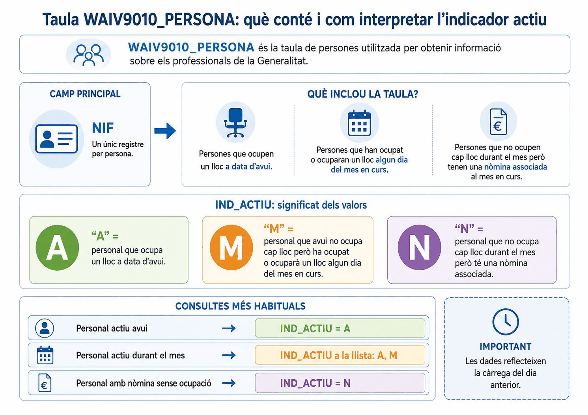
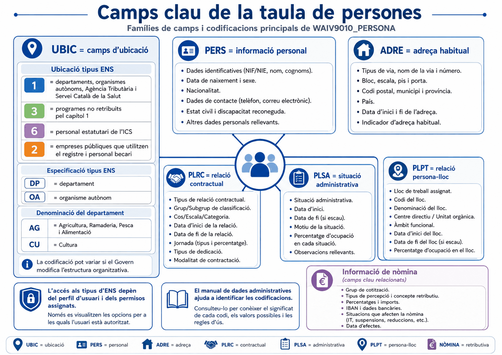
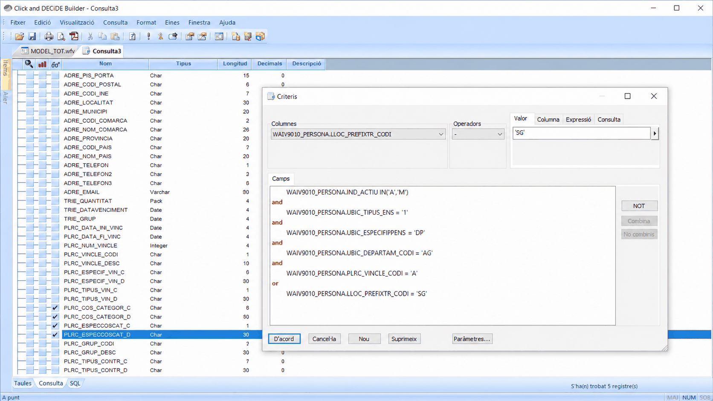
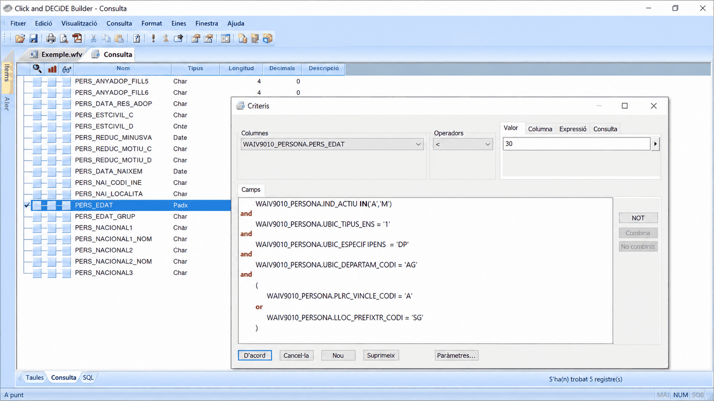
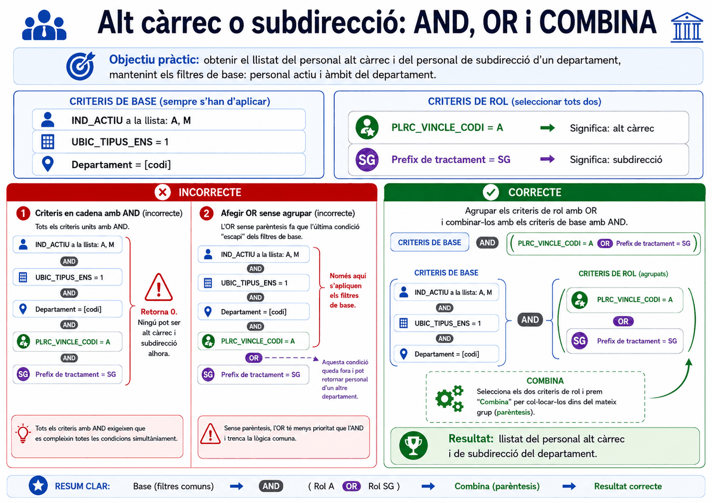
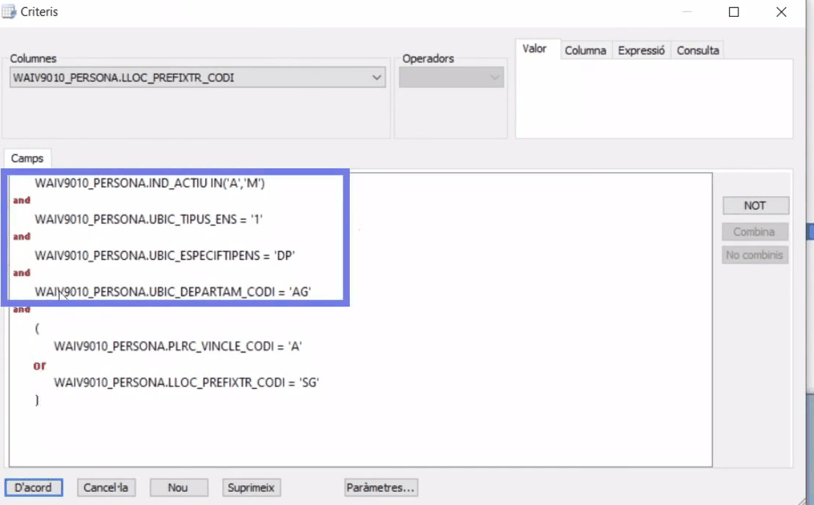
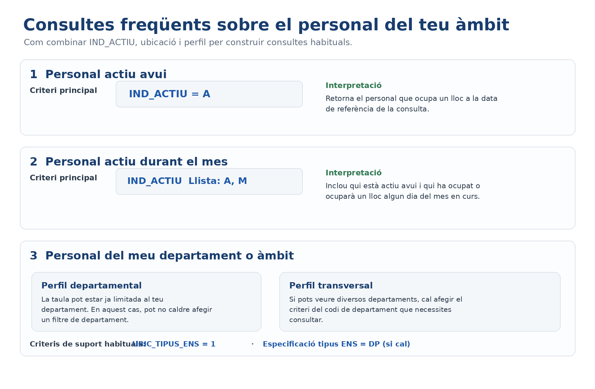

Apartat 1La taula a fons
És la taula central de les dades administratives de personal. Conté informació de tots els professionals i la seva clau única és el NIF.
- Qui hi surt
- Els treballadors actius avui, els que ho han estat algun dia del mes en curs, i els inactius que encara tenen nòmina associada, per exemple per endarreriments.
- Clau
PERS_NIF. Una fila per persona.- Vigència
- Dades actuals, vigents el dia anterior.
- Càrrega
- Diària, durant la nit.
- Abast
- Totes les persones, les del departament o les de la unitat orgànica, segons el perfil.

Apartat 2IND_ACTIU: qui hi surt
Ja el vam presentar a la unitat 4. Ara toca l'ús pràctic, perquè és el primer criteri de gairebé qualsevol consulta sobre persones.
| Valor | Qui és | Definició tècnica |
|---|---|---|
| A | Personal en actiu a data d'avui. | Data fi d'ocupació nul·la, o posterior o igual a la data actual. |
| M | No ocupa lloc avui, però sí algun dia del mes en curs. | Data fi d'ocupació posterior o igual al dia 1 del mes actual. |
| N | No ocupa lloc en tot el mes, però té nòmina associada. | No té punter, o data fi anterior al dia 1 del mes actual. |
Les dues consultes que necessitareu sempre
Plantilla d'avui
Per a preguntes del tipus "quanta gent tenim". És la consulta model 1 de la unitat 00.
Activitat del mes
Per a nòmina o estadístiques mensuals: tothom que ha treballat algun dia del mes.
Perquè, com vam veure a l'exercici EX-06-2, dos criteris =
sobre el mateix camp s'uneixen amb AND i tornen zero. Aquí és on aquella
lliçó comença a rendir.
Apartat 3Els camps d'ubicació
Els camps amb prefix UBIC situen la persona dins de
l'organització. Tres d'ells tenen codificació pròpia que cal conèixer.
Ubicació tipus ENS
| Codi | Què inclou |
|---|---|
| 1 | Departaments, organismes autònoms, Agència Tributària i Servei Català de la Salut. |
| 2 | Empreses públiques que fan servir el registre de personal de la Generalitat, i personal becari. |
| 3 | Programes no retribuïts pel capítol 1. |
| 6 | Personal estatutari de l'Institut Català de la Salut. |
Especificació tipus ENS
Concreta la naturalesa de l'ens: DP per a departament,
OA per a organisme autònom, i uns quants més. La llista
completa de codis és al manual de dades administratives de la intranet.
Denominació del departament
Codi de dues lletres: AG per a Agricultura, CU per
a Cultura, i així la resta.
Si el vostre perfil és d'un departament concret, el sistema ja limita les dades al vostre àmbit. Afegir un criteri de departament no canvia res i, si us equivoqueu de codi, us deixa la consulta a zero. Recordeu la unitat 2: el filtre del perfil s'aplica sol.

Dues advertències que fa el vídeo oficial i que estalvien maldecaps. La primera: l'accés als tipus d'ENS el marquen els permisos de les taules WAI, de manera que potser no els podreu veure tots i no és cap error de la consulta. La segona: la codificació dels departaments canvia quan el Govern reorganitza l'estructura organitzativa, ajuntant departaments o creant-ne de nous. Una consulta que fa un any donava el resultat bo pot donar-ne un altre avui pel mateix criteri.
El vídeo explica què vol dir cada tipus d'ens amb exemples; el manual de taules els anomena pel seu nom: 1 públic, 2 paràpúblic, 3 sectors específics i 6 institucions sanitàries. Són les dues cares de la mateixa classificació.
I una cosa que convé saber abans de filtrar per
UBIC_ESPECIFTIPENS: els seus codis depenen del tipus
d'ens. Amb tipus 1 trobareu DP departament,
OA organisme autònom, EG entitat gestora o
SC Servei Català de la Salut; amb tipus 2,
PT patronat, CO consorci,
SM societat mercantil o UN universitat; i
amb tipus 3, els codis de capítol pressupostari. El mateix valor no
vol dir el mateix segons el tipus d'ens que tingueu al costat.
Apartat 4La resta de famílies
| Prefix | Conté | Exemples d'ús |
|---|---|---|
| PERS | Sexe, edat, fills, nacionalitat, data d'ingrés, adreça habitual. | Piràmide d'edats, estudis d'igualtat, antiguitat. |
| PLRC | Tipus de vincle (funcionari, laboral, alt càrrec), cos, escala, categoria, grup, especialitat. | Distribució per vincle o per grup, la consulta més habitual de totes. |
| PLSA | Situació administrativa i les seves dates. | Si filtreu per personal actiu, normalment serà servei actiu o serveis especials. |
| PLPT | El punter: com ocupa el lloc (comissió de serveis, interinitat, definitiu), trienis. | Formes d'ocupació, provisionalitat. |
| ADRE | Adreça habitual, codi postal, municipi, província. | Distribució territorial. Compte amb els apòstrofs dels topònims. |
| Nòmina | Grup de cotització, entitat bancària, afiliació a Seguretat Social o MUFACE. | Només si el vostre perfil hi arriba. |
Encara n'hi ha tres famílies més que apareixen si baixeu prou: PLPA, amb el departament i la unitat orgànica del punter anterior; PLNO, amb les dades de nòmina (tipus de cotització, Seguretat Social o MUFACE, grup de cotització, entitat bancària); i PLGR, amb el grau consolidat i les dates i autoritats de la resolució.
Una nota per si la trobeu a la llista de taules: el manual documenta
també WAIV9020_VINSITADH, amb els vincles i les
situacions administratives. Cap dels videotutorials no l'ensenya, de
manera que aquesta guia no hi entra; si us hi topeu, sabreu què és i
on buscar-ne la descripció.
Apartat 5Què és un punter
És un terme que apareix per tot el material i que gairebé mai s'explica. Val la pena aturar-s'hi, perquè sense entendre'l les unitats 9 i 14 no tenen sentit.
Un punter és la relació entre una persona i un lloc de treball durant un període. No és la persona ni el lloc: és el vincle entre tots dos, amb una data d'inici i, si s'ha acabat, una data de fi.
Aquesta idea explica tres coses que ja heu vist o veureu:
-
Per què
IND_ACTIU = 'N'es defineix com "no té punter": no hi ha cap lloc associat a aquella persona. - Per què la taula de llocs pot dir qui ocupa un lloc ara: guarda el punter vigent. Unitats 8 i 9.
-
Per què la taula d'històrics es diu
PUNTERH: és la taula de tots els punters, també els tancats. Unitat 14.
El camp LLOC_CODI de la taula de persones és el que la
lliga amb la taula de llocs: hi guarda el codi del lloc que la
persona ocupa ara, i és el mateix codi que fa de clau a
WAIV9080_LLOC. Enllaçant els dos camps s'obtenen les
característiques del lloc de cada persona. I al revés, la taula de
llocs porta ACT_NIFPER, que enllaça amb
PERS_NIF. Són les dues cares del mateix vincle, i
convé saber quina us convé segons què hi vulgueu posar al costat.
Apartat 6Tot és AND per defecte
Cada vegada que afegiu un criteri nou, queda lligat a l'anterior amb l'operador AND. Això no es tria: és el comportament per defecte i cal saber-ho.
AND
Les dues condicions són obligatòries: personal funcionari que a més té menys de 25 anys.
OR
N'hi ha prou que se'n compleixi una: tot el personal funcionari, més qualsevol persona menor de 25 anys encara que no ho sigui.
Apartat 7El cas: alts càrrecs o subdireccions
Aquest és l'exemple que fa servir el material oficial i val la pena seguir-lo sencer, perquè els dos errors que apareixen són els dos errors que fareu vosaltres.
Un llistat dels alts càrrecs i del personal de subdirecció d'un departament concret, en actiu.
Es tradueix en sis criteris, que al panell Camps es llegeixen així:
L'operador Llista es representa com
IN('A','M'), igual que a l'SQL. I el camp del prefix de
tractament, tot i ser informació del lloc, es diu
LLOC_PREFIXTR_CODI i viu dins de la taula de
persones: no cal enllaçar cap altra taula per a aquesta consulta.
Amb tot unit per AND, el sistema busca una persona que sigui alt càrrec i alhora subdirectora. És impossible, i per això no torna res. Exactament el mateix zero de l'exercici EX-06-2.
Apartat 8Primer intent: canviar AND per OR
La correcció evident és fer clic sobre l'AND que uneix els criteris 3 i 4 per convertir-lo en OR. I sembla que funciona: ja tornen registres. Però el resultat és fals, i d'una manera silenciosa.

El problema és la precedència. En posar un OR al final, el programa agrupa els cinc primers criteris amb AND i separa l'últim de la resta. Els filtres d'activitat i d'ubicació deixen d'aplicar-se als subdirectors.
Perquè la consulta torna dades. No hi ha cap missatge d'error. Si no coneixeu la mida esperada del resultat, aquest informe surt per la porta amb gent d'altres departaments a dins.
Apartat 9Segon intent: Combina
El que necessiteu és un parèntesi: que els filtres de departament i activitat s'apliquin als dos col·lectius alhora. El botó que ho fa és Combina.
-
Seleccioneu la primera fila
Feu clic a la fila del criteri del vincle, el de l'alt càrrec.
-
Manteniu premuda la tecla Control
Sense deixar-la anar, feu clic a la fila del prefix de tractament.
-
Premeu Combina
Fins ara el botó Combina estava apagat. Amb les dues files seleccionades s'activa: premeu-lo i els dos criteris queden tancats entre parèntesis.
-
Comproveu el connector de dins
Dins del parèntesi hi ha d'haver OR. Si hi ha quedat AND, feu-hi clic per canviar-lo.

Al panell Camps els connectors and i or surten en vermell i els parèntesis ocupen línia pròpia. Es llegeix com un esquema: si el parèntesi no abraça les línies que voleu, es veu a l'instant.

Sempre que en una frase hi hagi un "o" enmig de condicions obligatòries, aquell "o" va entre parèntesis. "Del meu departament, actius, i que siguin això o allò": el que va després del "siguin" és el que s'ha de combinar.

Apartat 10Verificar-ho al SQL
Aquí és on la pestanya SQL de la unitat 4 deixa de ser una curiositat. És l'única manera de veure on han quedat realment els parèntesis sense fiar-vos de la vista de criteris.
Si el parèntesi no hi és, o abraça els criteris equivocats, ho veureu aquí abans d'enviar l'informe a ningú. Feu-ho sempre que una consulta tingui un OR.
Apartat 11L'operador NOT
El tercer botó del marge dret nega una condició o una combinació sencera de condicions.
Per a un sol camp amb pocs valors sol ser més clar l'operador No en la llista, que veurem a la unitat 8. NOT és útil quan el que voleu negar és tot un bloc combinat, com l'exemple de dalt.
Apartat 12Errors freqüents
El que passa
Zero registres i els valors són correctes.
Surten més registres dels que hi hauria d'haver.
Surt gent d'altres departaments.
He filtrat pel meu departament i ara no surt ningú.
El que passa de veritat
Dues condicions incompatibles unides per AND. Us cal OR o Llista.
Hi ha un OR sense parèntesi. Mireu el SQL.
El mateix: el filtre d'àmbit no s'aplica a la branca de l'OR. Feu servir Combina.
El perfil ja filtrava sol, i el codi que hi heu posat no és el vostre. Traieu el criteri.

Apartat 13Exercicis
Actius del mes
ReprodueixObteniu dues xifres sobre PERSONA i expliqueu per què són diferents:
- Persones en actiu a data d'avui.
- Persones que han estat en actiu algun dia del mes.
Comprovació
La segona ha de ser més gran o igual que la primera, mai més petita:
el conjunt A està inclòs dins de A més
M. Si us surt més petita, teniu un altre criteri posat.
152 en actiu avui
La trampa dels parèntesis
TrencaÉs la consulta model 5 de la unitat 00. Volem el personal en actiu, del servei territorial de Barcelona Comarques, amb especialitat INF o MAT.
Feu-la dues vegades:
- Mal agrupada: poseu els quatre criteris i canvieu a OR només l'últim AND, sense combinar res.
- Ben agrupada: seleccioneu les dues files d'especialitat amb Ctrl, premeu Combina i deixeu OR a dins.
Anoteu les dues xifres i mireu el SQL de cadascuna.
Comprovació
46 registres, incorrecte
17 registres, correcte
Els 29 de diferència són gent amb especialitat MAT que no és d'aquell servei territorial o no està en actiu, i que s'ha colat perquè a la seva branca no se li aplicaven els altres dos filtres.
Tradueix l'encàrrec
ResolUs arriba aquest encàrrec per correu, tal qual:
"Necessito la gent en actiu del nostre àmbit que sigui personal funcionari o interí, i que tingui menys de 30 anys."
Escriviu els criteris i digueu quins han d'anar dins d'un parèntesi abans de tocar el programa.
Pista
Busqueu el "o" de la frase. Tot el que uneix va entre parèntesis. I fixeu-vos que hi ha una condició que no cal escriure.
Solució
El "del nostre àmbit" no s'escriu. El perfil ja el filtra sol. Si l'afegiu i us equivoqueu de codi, us quedeu sense resultats.
El parèntesi també es podria evitar fent servir
Llista amb els valors F i
I, que en aquest cas és més curt i més segur. Els
parèntesis són imprescindibles quan l'OR uneix camps
diferents, com al cas dels alts càrrecs.
Apartat 14Llista de comprovació
- Dir quina és la clau de la taula de persones i qui hi surt.
- Explicar els tres valors de
IND_ACTIUi quan es fa servir cadascun. - Construir la consulta de plantilla d'avui i la d'activitat del mes.
- Interpretar els codis d'ubicació tipus ENS.
- Justificar per què no cal filtrar pel propi departament.
- Saber a quina família és cada tipus d'informació.
- Explicar què és un punter i per què importa a les unitats 9 i 14.
- Saber que tots els criteris s'uneixen amb AND per defecte i com canviar-ho.
- Detectar quan una consulta necessita un parèntesi llegint l'encàrrec.
- Fer servir Ctrl i Combina per agrupar criteris.
- Comprovar l'agrupació a la pestanya SQL.
- Explicar per què una consulta mal agrupada és més perillosa que una que torna zero.
Canviem de taula. WAIV9080_LLOC mira l'organització des dels llocs de treball i no des de les persones, i porta el camp que decideix quins llocs són vigents de veritat.